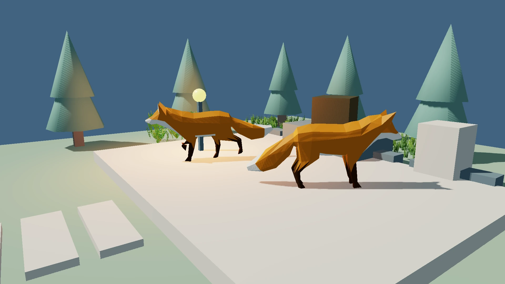
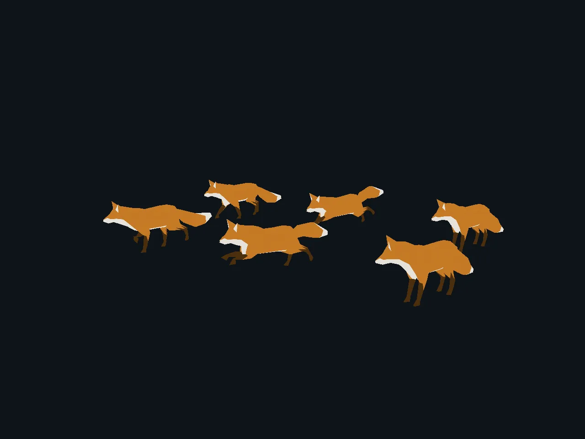
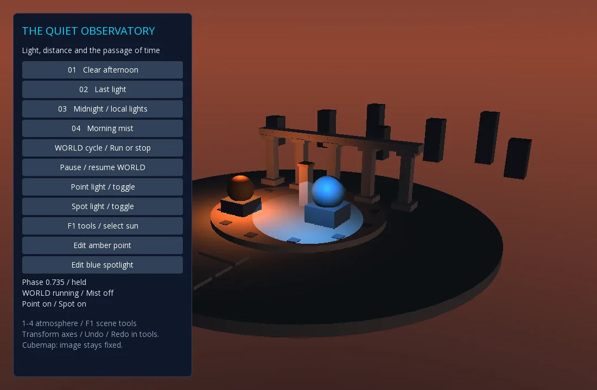
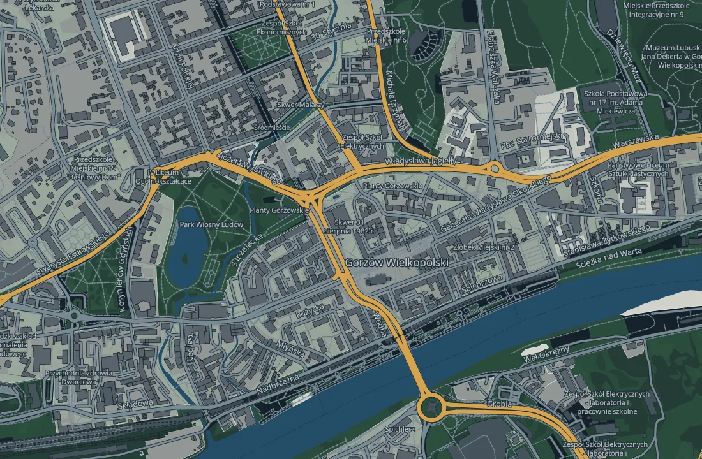

Know what owns what
Systems belong to one scene. Resources have visible lifetimes. Shutdown follows a predictable order.
OPEN SOURCE · JAVA · LIBGDX
A Java game engine with a clear scene model, an extensible component core, and the tools to take an idea from a single object to a whole world.

CAPTURED IN THE ENGINE
Real frames from the desktop demos. Explore the light, the leaves and the characters, then run the scenes yourself.
These are engine screenshots. Launch the desktop examples below to explore the scenes interactively.
Fox model: PixelMannen (CC0 1.0); rig / animation: tomkranis and glTF conversion: AsoboStudio / scurest (CC BY 4.0). Fox notice & credits ↗
Original foliage artwork and tree geometry: CC0 1.0 ↗. Original block humanoid, rig and tool animation: CC0 1.0 ↗.
01 / THE ENGINE
JavityEngine is built around Game, GameObject and Component. Gameplay stays in Java; rendering, physics, UI and services join the scene as explicit systems.
Systems belong to one scene. Resources have visible lifetimes. Shutdown follows a predictable order.
Objects can carry multiple components of the same type. Systems query the scene without hiding game state in a global registry.
Maps, Bullet 3D physics, asset streaming and React UI are separate additions. A small game can keep a small runtime.
02 / JAVA, DIRECTLY
Components are ordinary Java classes. The engine owns their lifecycle; your update logic stays close to the object it describes.
Read the game authoring guide// A Component runs with its owning GameObject.
public final class MoveRight extends Component {
private final float speed = 120f;
@Override public void onUpdate(float delta) {
Transform2D transform = getTransform();
transform.position.x += speed * delta;
}
}
Game game = new Game();
GameObject player = game.createObject("player");
player.addComponent(new MoveRight());
game.start();03 / THE TOOLKIT
Keep the pieces you need. Add the rest when the game calls for it.
Scene-local cameras and renderers, sprites, models, lighting and sky. Optional glTF/PBR, HDR and directional shadows extend the desktop rendering path.
Engine guideAntialiased circles, rounded rectangles and expressive polylines. Animate styles or bring a bounded custom shader material.
Shapes and shadersPer-instance model poses, clip crossfades, masked layers, 2D sprites and an avatar view that can share one animation clock.
Animation API
Opt-in static and skinned instancing, with ordinary rendering as a compatibility path.
See the guide Fox: PixelMannen (CC0 1.0); rig / animation: tomkranis and conversion: AsoboStudio / scurest (CC BY 4.0). Full asset credits ↗Runtime hierarchy, selection, transforms, gizmos, undo/redo and explicit SceneJson export.
Scene2D and Yoga-backed declarative widgets, with a typed React/TSX host as an optional layer.
04 / BUILD A WORLD
Grow the scene with optional systems for physics, streamed assets, geographic maps and multiplayer room experiments.

05 / RUN THE EXAMPLES
Run a garden, a woodland or an imported character fixture on desktop. Keep exploring with the earlier engine examples.
Original imported Fox models, PBR foliage, directional shadows and HDR exposure share one scene. Switch afternoon, last light and lantern presets; open the runtime inspector with F1.
./gradlew :javity-desktop:qualityDemoExamples need JDK 25 and a desktop OpenGL context. Fox Garden requires GL30 and supported HDR/shadow targets. Some optional demos need additional native libraries. Commands and prerequisites are documented with each guide.
06 / HONEST PLATFORM STATUS
A build passing is a start. Each platform and module still has its own runtime gates.
Read current modernization statusOffscreen foliage stays in shadow-pass submissions. Demo cleanup continues after component errors, and failed avatar captures restore framebuffer state and release temporary pixels.
Fixes & regression evidence ↗JDK 25 on Linux x64, including real OpenGL/Mesa smoke coverage for named demos.
The complete five-test suite passes on an API35 x86_64 KVM emulator: input, rendering, context recovery, rotation and Activity recreation. Physical ARM64, performance, MapLibre and Bullet are also unverified.
Android evidence ↗A separate TeaVM WasmGC build renders an actual Javity scene through GdxRenderer and WebGL2 in Chromium. Yoga/UI, browser physics, broad asset support and the rest of the optional providers still need integration and verification.
Wasm rendering spike ↗
MapLibre Native renders local vector tiles through a separate Linux x64 adapter.
How the adapter worksMap data © OpenStreetMap contributors · OpenMapTiles · OpenFreeMap
MAKE SOMETHING THAT MOVES
Read the engine guide, run a desktop demo, or start exploring the source.